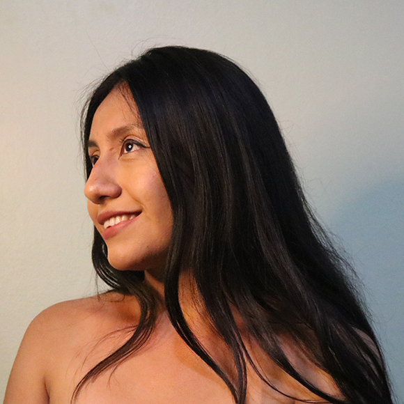

Hola, soy Claudia Romero

Diseñadora interdisciplinar intereasada en desarrollo web Front-End y con experiencia en medios digitales e impresos, estudiante de la maestría en procesos culturales para el diseño y el arte en la UAM Azcapotzalco. Siempre dispuesta a aprender y colaborar con equipos multidisciplinares.
Desarrollo Web
Construyo sitios web responsivos y diferentes con diferentes tecnologías. Me enfoco en front-end
Escritura creativa
Durante mi profesión he desarrollado ensayos, cuentos y artículos sobre diseño, cultura y problemas sociales.
Aprendiz constante
Actualmente me encuentro estudiando la maestría en procesos culturales para el diseño y el arte. Además de estar tomando cursos de actualización que sirvan para mi profesión.
Redes sociales
Cuento con más de 4 años trabajando en social media, además de contar con capacitaciones de YouTube impartidas directamente por Google.
Mailing
Manejo de herramientas y software para envío masivo de mail a bases de datos.
Editorial
He fundado y coordinado editoriales. Conozco los procesos ante INDAUTOR, así como de producción, publicación y producción de libros.
.png)


Claudia ha desarrollado de manera eficiente sus habilidades en programación front-end, demostró ser una gran estudiante y bastante colaborativa con sus compañeras.
Nancy Salazar
Instructora en Tecnolochicas PRO
Recomiendo a Claudia por su eficiente desarrollo de habilidades en programación front-end. Como estudiante, demostró ser excepcional y colaborativa con sus compañeras. Su compromiso y capacidad destacada la hacen sobresalir en cualquier entorno de trabajo.
Arantza Sánchez
Bióloga molecular, INMEGEN

Es alguien muy creativa, enfocada en mejorar y en entregar trabajos de calidad, una persona muy amable, responsable y trabajadora.
Valentina Morales
Desarrolladora de software multiplataforma